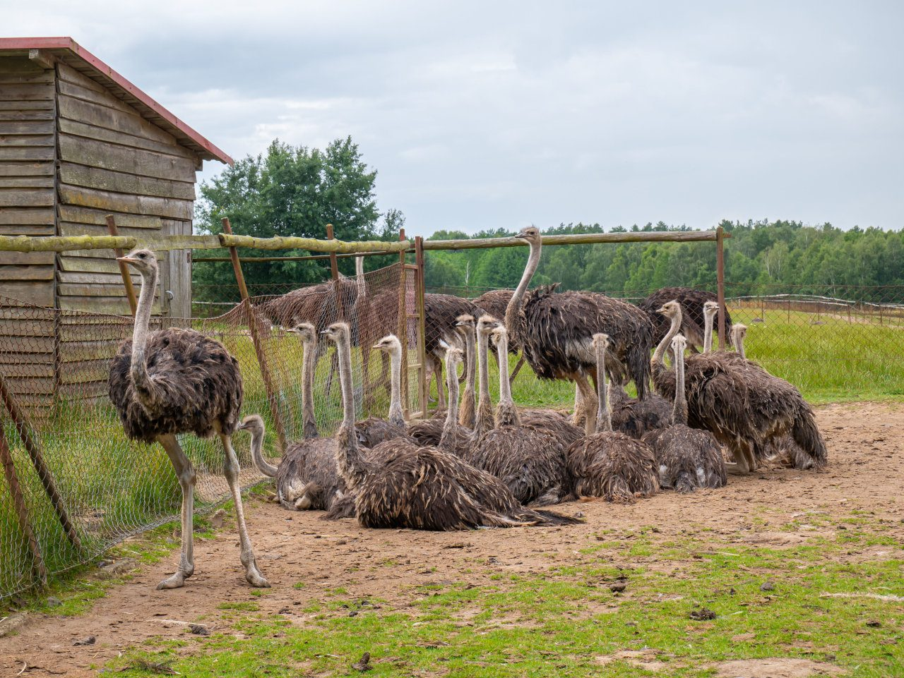

Ferma Strusi Afrykańskich w Garczynie gdy już skończyliśmy zwiedzać Kociewie i ruszyliśmy na Kaszuby, naszym pierwszym przystankiem by Garczyn. Działa tutaj licząca sobie ponad 300 osobników najstarsza w Polsce farma strusi. Możesz zostawić samochód kilkaset metrów od fermy, a potem spacerem przejść obok zagród zarówno tych największych strusi, jak i kilkutygodniowych strusich bobasów.